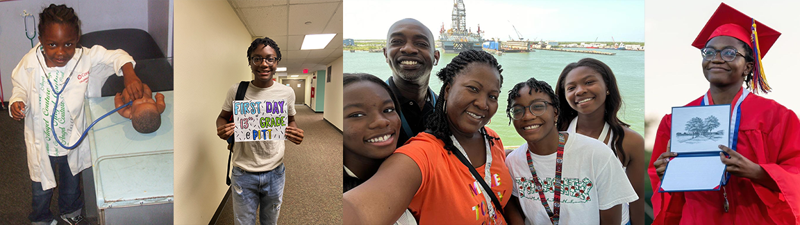

Here is some info about me!
Hi, I'm Ohenmaa Ofosu-Mensah, and I'm thrilled to share my story with you. I am a second-generation Ghanaian American. My parents immigrated to the United States from Ghana for a better life and job opportunities. I am proud to say that I am the first child in my entire extended family to be born in the United States! I am currently a senior at the University of Pittsburgh, where I am pursuing a major in Information Science with a minor in Computer Science.
My fascination with computers and software development started at a young age when I became addicted to my family’s home computer. Playing browser games on our old Windows XP was my first experience with computing. As I got older, I became interested in the systems running the games and the mechanics behind them. During high school, I worked hard to save up money to build my own gaming PC, and it was a dream come true for me. Learning how to build a computer from scratch and understanding the parts that go inside of it became a skill and hobby that I enjoy to this day.
Around the same year, I developed an Android app through MIT’s App Inventor for the AP Computer Science Principles exam. It was through that experience that I realized I wanted to become a programmer as a future career. After being accepted into the prestigious University of Pittsburgh, I started studying Computer Engineering, which I later switched to Computer Science to take more courses with an emphasis on software development.
But, as I developed in my studies, I realized my interests extended far beyond just software development. I have always been passionate about understanding and solving complex problems, particularly in the realms of technology and security. This interest naturally led me to the field of cybersecurity, where I excelled academically and through hands-on project work. My enthusiasm for this field grew as I realized I could leverage my technical skills in programming and data analysis to protect information systems and counteract cyber threats. The intersection of technology and security offers a dynamic and impactful environment, and I am excited to contribute to safeguarding critical information and infrastructures.
Until that time comes, when I get my degree, I will be learning. Whether that is in courses, research projects, internships, or on my own, I plan to expand my capabilities not just in cybersecurity work but through projects directed in other areas of study as well.
Currently, I am working on several personal projects using Java, Python, and SQL which I will showcase on this webpage and on my GitHub. These projects have been helping me develop my technical skills while also allowing me to explore different areas of computer science and data science. Additionally, I am finishing up my Google Data Analytics Certificate, which has been an excellent experience for me in terms of learning how to work with data and present insights.
Outside of academics, I enjoy building computers, playing video games (right now The Sims and Red Dead Redemption 2 are on rotation), and listening to music. I have a soft spot for punk/emo bands and the occasional Taylor Swift album (especially Speak Now). Recently, I have also been taking time out of my day to go to the gym five times a week which has really helped me maintain a healthy lifestyle.
Finally, I am writing this here to manifest that one day I can contribute to meaningful research and software development that will make a positive impact in the world!
Thank you for taking the time to read my bio!